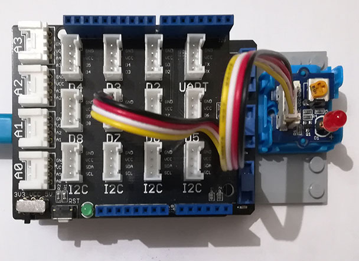

Version: 0.8.0
Grove Led is connected as followed on Netduino3:

| Grove Led | Mainboard with base shield |
|---|---|
| Yellow wire | Socket D7 |
using System.Threading;
using Bauland.Grove;
using Bauland.Pins;
namespace TestLed
{
internal static class Program
{
private static void Main()
{
// Led Grove module is connected as follow:
// * yellow wire on D7
// on a base shield connected on Netduino3
Led led = new Led(Netduino3.GpioPin.D7);
while (true)
{
led.TurnOn();
Thread.Sleep(500);
led.TurnOff();
Thread.Sleep(500);
}
}
}
}